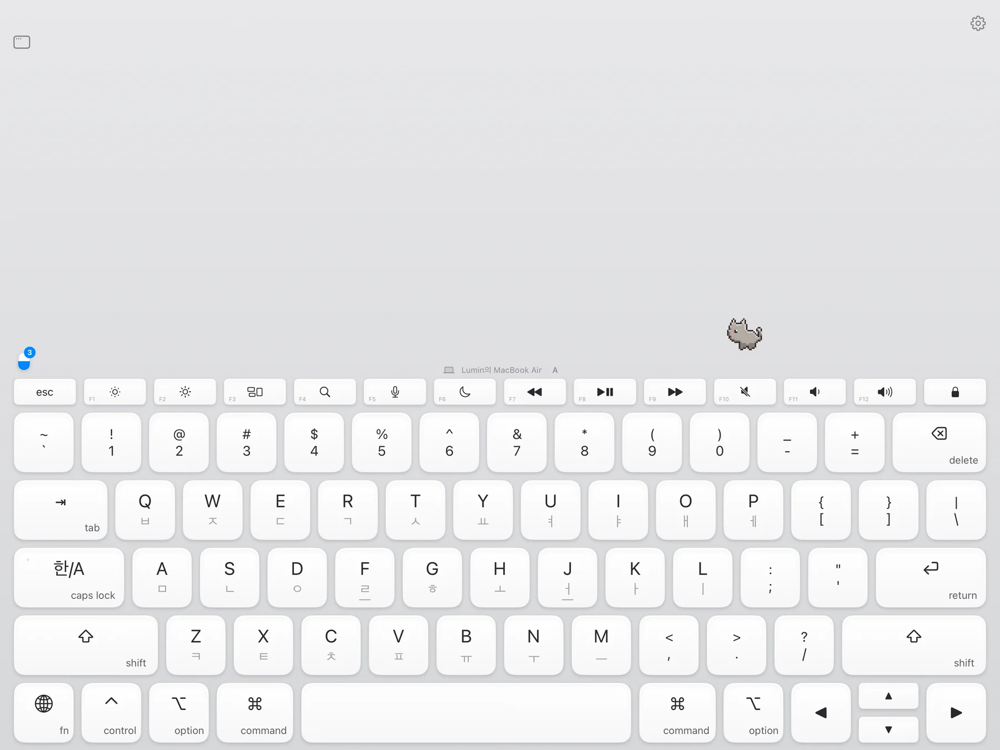
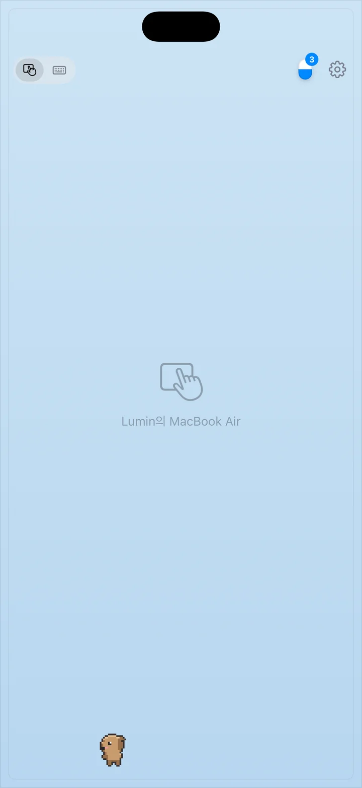

아이패드가 매직 키보드가 됩니다. Your iPad. A Magic Keyboard.
책상에 놓고 열 손가락으로. 소리 없이, 한글은 깨지지 않게. 아이폰은 트랙패드가 됩니다. Lay it flat and type with ten fingers. Completely silent. Your iPhone becomes the trackpad.


한글, 깨지지 않습니다. Feels exactly like a real keyboard.
글자를 보내지 않고 키 위치만 보냅니다. 조합은 Mac 입력기가 직접 하니까, 실물 키보드와 똑같이 움직입니다. ingtype sends key positions, not characters. Your Mac does the rest, so every language, shortcut and input method behaves exactly as it does on a physical keyboard.
- 받침 이어 치기, Shift + ㅂ = ㅃ, 조합 중 백스페이스까지Zero lag on the same Wi‑Fi
- 한/A 상태는 Mac을 그대로 따라갑니다Any input method, including Korean, Japanese and Chinese
- 펑션 줄, 밝기·볼륨·미디어 키 그대로Function row with brightness, volume and media keys

눈은 아이패드에,
손은 그대로.
Eyes on the iPad.
Hands stay put.
키보드 위 작은 창에 Mac 창을 실시간으로 띄웁니다. 앱을 열고, 웹도 봅니다. 고개를 들 일이 없습니다. A small window above the keys mirrors any Mac window, live. Open Mac apps or browse the web right there.

배경은 내 책상. Your desk is the background.
책상을 찍으면 키보드 뒤 배경이 됩니다. 기울이면 배경만 살짝 움직여, 키보드가 책상 위에 떠 있는 것처럼 보입니다. Snap your desk and it becomes the backdrop. Tilt the iPad and only the background shifts, so the keys look like they float above your desk.

아이폰은 트랙패드. Your iPhone is the trackpad.
탭, 두 손가락 스크롤, 핀치, 드래그, 세 손가락 제스처. 클릭마다 햅틱. 아이폰 키보드로 치면 그대로 Mac에 들어갑니다. Tap, two-finger scroll, pinch, drag and three-finger gestures, with haptics on every click. Type on your iPhone keyboard and it lands on the Mac.
- 두 손가락으로 누르고 기울이면 커서가 크게 이동Hold with two fingers and tilt to fly across the screen
- 이모지도 그대로Emoji included


키 위를 걷는
작은 친구들.
Little friends
on the keys.
32마리 픽셀 펫이 타자에 방해되지 않게 키보드 위 한 줄을 오갑니다. 오래 쉬면 잠들고, 탭하면 폴짝. 32 pixel pets wander a single line above the keys, never in the way. They nap when you rest and hop when you tap.

서버 없음. 계정 없음. 추적 없음. No server. No account. No tracking.
같은 Wi‑Fi 안에서 기기끼리 직접, 암호화해서 연결합니다. 우리는 당신이 무엇을 치는지 볼 수 없습니다. Your devices talk directly over Wi‑Fi, encrypted. We can't see what you type, because it never reaches us.
Mac 화면의 코드로 한 번만. 페어링한 기기만 접속합니다.Pair once with the code on your Mac. Only paired devices can connect.
키 입력은 Mac에 닿는 순간 처리되고 어디에도 남지 않습니다.Keystrokes are handled the moment they arrive and are never saved.
추적 SDK가 하나도 없습니다. App Store 개인정보: 수집 안 함.Not a single tracking SDK. App Store privacy label: Data Not Collected.
1분이면 됩니다.One minute to set up.
무료입니다. 메뉴 막대에 조용히 머뭅니다.Free. It sits quietly in your menu bar.
Mac 메뉴 → 새 기기 페어링. 아이패드·아이폰에 입력합니다.Mac menu → Pair New Device. Type it on your iPad or iPhone.
다음부터는 앱을 열면 자동으로 연결됩니다.From then on it reconnects on its own.
한 번 사면 아이패드·아이폰 모두. 구독도, 인앱 결제도 없습니다. Mac 앱은 무료. Buy once for both iPad and iPhone. No subscription, no in-app purchases. The Mac app is free.